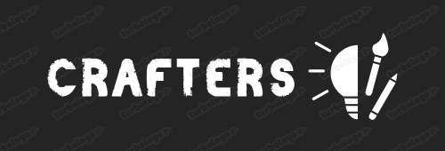
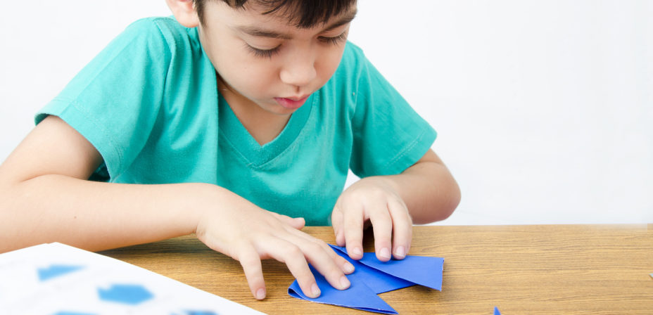
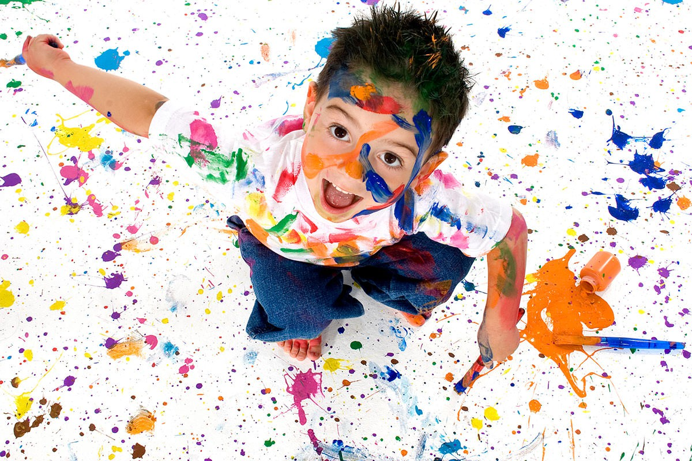
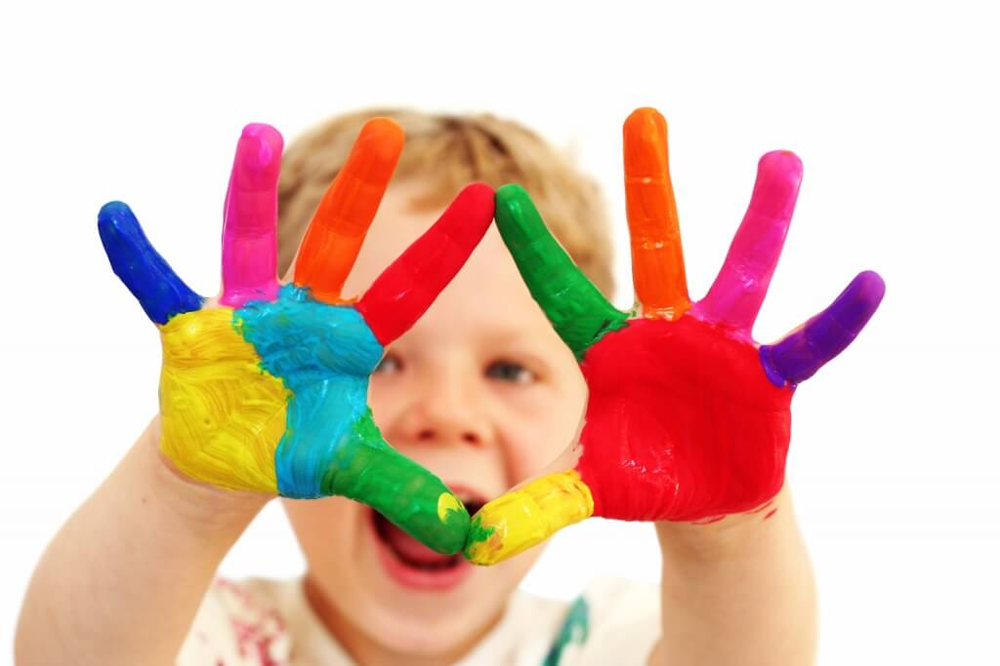

Una plataforma diseñada para fomentar la creatividad en los niños, permitiéndoles compartir sus proyectos artísticos y manualidades, aprender de otros y participar en desafíos creativos.



Comunidad de creadores
Tutoriales en Video:
Variedad de Temas: Desde pintura, dibujo, escultura, hasta manualidades con materiales reciclados.
Instructores Especializados: Videos grabados por artistas o educadores que guían a los niños paso a paso.
CRAFTERS ofrece:
Galería de Proyectos:
Perfil de Usuario: Cada niño tiene su propio perfil donde puede mostrar sus creaciones.
Carga de Imágenes: Opción de subir fotos o videos de los proyectos terminados.
Etiquetas y Categorías: Los proyectos pueden ser etiquetados por tipo (pintura, manualidad, etc.) para facilitar la búsqueda.
Desafíos Mensuales:
Temáticas Variadas: Cada mes se propone un tema (por ejemplo, "Animales", "Naturaleza", "Superhéroes").
Votaciones y Premios: Los usuarios pueden votar por sus proyectos favoritos; los ganadores reciben premios virtuales o medallas.
Comentarios y Likes:
Interacción Segura: Los niños pueden dejar comentarios positivos y sugerencias constructivas en los proyectos de otros.
Sistema de Moderación: Los comentarios se moderan para asegurar un ambiente respetuoso.
Foro de Discusión:
Conversaciones Temáticas: Espacio para discutir técnicas, herramientas, y recibir consejos.
Preguntas y Respuestas: Los niños pueden hacer preguntas y recibir respuestas de otros usuarios o de mentores.
Tienda de Materiales (muy pronto):
Recursos: Recomendaciones de materiales y herramientas que se pueden comprar.
Descuentos para Usuarios: Ofertas especiales para miembros de la comunidad.